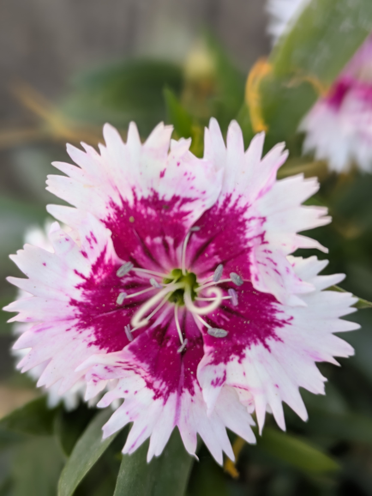

Hello from html-in-canvas!
I'm multi-line, formatted, rotated text with emoji (😀), RTL text من فارسی صحبت میکنم, vertical text,
I'm multi-line, formatted, rotated text with emoji (😀), RTL text من فارسی صحبت میکنم, vertical text,
这是垂直文本
an inline image (
), and !